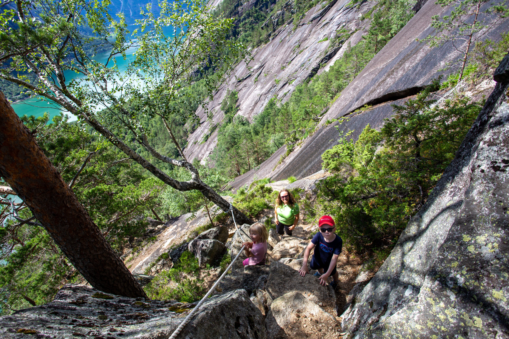

Sommar i Hardanger

Ein oppsummering av ulike turar i Hardanger sommarane 2022 og 2023, med gode vener og familie. Tilgjengeleg i 4K.
Du kan hoppe til ulike turar ved å trykke på tidspunkta under videoen på YouTube. Her er oversikta over ein del av stadene du får sjå:
- 00:00 Vetlahorgi og Krokavatnet (Olastøl)
- 00:13 Kjeåsen (Eidfjord, Simadalen)
- 02:12 Nesheimshorgi (Høgahorgi) i Granvin
- 06:16 Olastøl i Granvin
- 07:01 Siderruta i Ulvik
- 07:21 Osa, Osafjorden og Øydvinstod
- 08:33 Kvemmadokkje08:37 Haugseåsen, blåbærjakt
- 08:52 Utkikspunktet over Granvin og Granvinsfjorden
- 09:15 Hedler, Lyngerstjørn, Svortetjørn og Velkjesfjellet
- 10:11 Midtfjell, Grimsnuten, Hardangerfjorden og brua
- 11:25 Fuglavatnet, Fuglevassdalen, Måvotno
- 11:48 Diverse klipp og timelapse
- 12:07 Skåndalshorgi (Skamdalshorgi)
Alt er filma med GoPro.